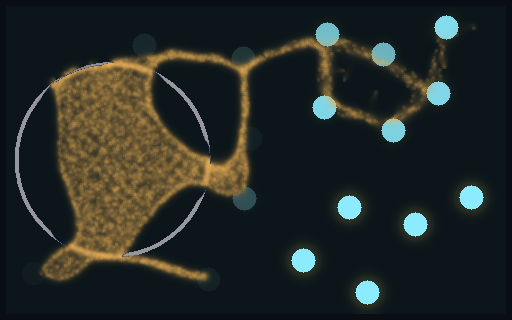
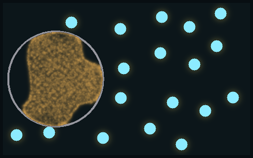
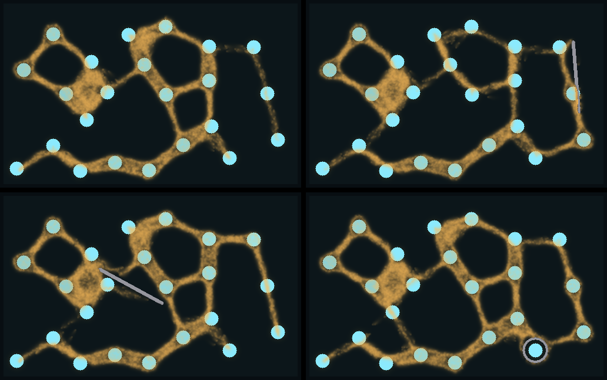
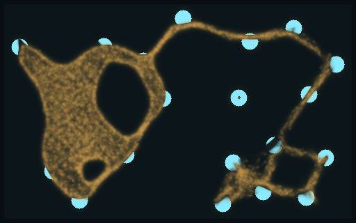
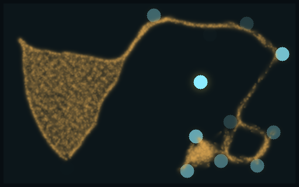
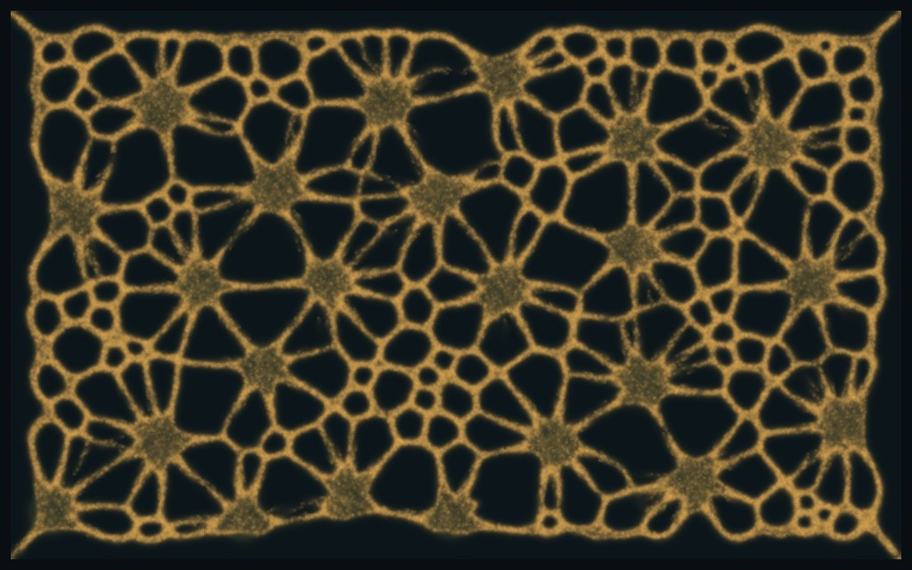
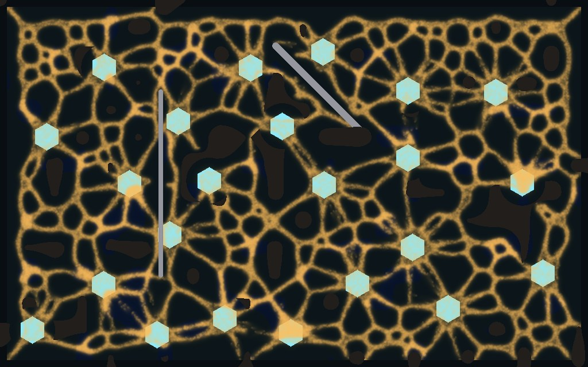

<title>Larder walls and crystals</title>
<meta name="claude:viewport-fit-sides" content="cover">
<link rel="preconnect" href="https://fonts.googleapis.com">
<link rel="stylesheet" href="https://fonts.googleapis.com/css2?family=Inter:wght@400;600&family=Space+Grotesk:wght@500;700&display=swap">
<style>
/* Layout: one reading column; each finding is a picture pair with its counts beside it. Colours come from the dish itself: mould amber, crystal cyan, agar ink. */
:root {
  --bg: #f3f5f6; --fg: #182024; --muted: #56646b; --line: #d5dde0;
  --panel: #ffffff; --amber: #a86a12; --cyan: #127a93;
  --display: "Space Grotesk", "Segoe UI", system-ui, sans-serif;
  --body: "Inter", "Segoe UI", system-ui, sans-serif;
}
@media (prefers-color-scheme: dark) { :root:not([data-theme="light"]) {
  --bg: #0b1114; --fg: #e3eaec; --muted: #93a3aa; --line: #22303a;
  --panel: #111a1f; --amber: #e2a95a; --cyan: #8cebff; color-scheme: dark } }
:root[data-theme="dark"] {
  --bg: #0b1114; --fg: #e3eaec; --muted: #93a3aa; --line: #22303a;
  --panel: #111a1f; --amber: #e2a95a; --cyan: #8cebff; color-scheme: dark }
body { background: var(--bg); color: var(--fg); font-family: var(--body); line-height: 1.55;
  padding-left: max(16px, env(safe-area-inset-left, 0px)); padding-right: max(16px, env(safe-area-inset-right, 0px)); padding-block: 28px 48px; }
main { max-width: 1060px; margin: 0 auto; display: grid; gap: 40px; }
h1, h2 { font-family: var(--display); text-wrap: balance; margin: 0; }
h1 { font-size: 1.9rem; }
h2 { font-size: 1.3rem; }
p { margin: 0; max-width: 68ch; }
.lede { color: var(--muted); }
section { display: grid; gap: 14px; }
.pair { display: grid; grid-template-columns: 1fr 1fr; gap: 12px; }
figure { margin: 0; display: grid; gap: 6px; min-width: 0; }
figure img { width: 100%; border-radius: 4px; border: 1px solid var(--line); display: block; }
figcaption { font-size: 0.9rem; color: var(--muted); }
figcaption b { color: var(--fg); font-weight: 600; }
.tag { font-family: var(--display); font-size: 0.78rem; letter-spacing: 0.06em; text-transform: uppercase; color: var(--amber); }
.tag.c { color: var(--cyan); }
.scroll { overflow-x: auto; }
table { border-collapse: collapse; font-variant-numeric: tabular-nums; font-size: 0.92rem; min-width: 520px; }
th, td { text-align: left; padding: 6px 12px 6px 0; border-bottom: 1px solid var(--line); }
th { font-weight: 600; color: var(--muted); font-size: 0.82rem; }
.note { font-size: 0.9rem; color: var(--muted); border-left: 2px solid var(--line); padding-left: 12px; }
code { font-size: 0.88em; }
@media (max-width: 640px) { .pair { grid-template-columns: 1fr; } }
</style>
<main>
  <header style="display:grid;gap:8px">
    <h1>Larder walls and crystals</h1>
    <p class="lede">Big dish on the CPU, 512 × 320, 20,000 walkers, 23 crystals that run dry; every picture there is the simulation at 40 s (PR #64). The last section is the same world on the GPU engine at 1024 × 640. 2026-11-11.</p>
  </header>

  <section>
    <span class="tag">Walls</span>
    <h2>The mould can wear a wall down</h2>
    <p>A wall cell has health. Each step, every walker that the wall blocks takes one bite from the cell it tried to enter. At zero the cell turns to rubble, which is open ground again but slow, like wet ground. A wall's brightness is its health. Below, a wall two dish cells thick goes round the whole starting mould, the hardest the mould can press.</p>
    <div class="pair">
      <figure>
        
        <figcaption><b>Health 400</b> (the new default). First cell broken at 4.3 s. Walkers outside: 217 at 20 s, 1,578 at 30 s, 2,927 at 40 s.</figcaption>
      </figure>
      <figure>
        
        <figcaption><b>Health 1,600.</b> First cell broken at 14.8 s, 254 cells broken by 40 s, none worn all the way through. Walkers outside: 0.</figcaption>
      </figure>
    </div>
    <div class="scroll"><table>
      <thead><tr><th>Wall health</th><th>First cell broken (seeds 1, 2, 3)</th><th>Walkers outside at 20 s</th><th>at 40 s</th></tr></thead>
      <tbody>
        <tr><td>0 (never breaks)</td><td>never, never, never</td><td>0, 0, 0</td><td>0, 0, 0</td></tr>
        <tr><td>400</td><td>4.7 s, 4.3 s, 3.4 s</td><td>6, 217, 660</td><td>2,023, 2,927, 2,319</td></tr>
        <tr><td>1,600</td><td>15.9 s, 14.8 s, 13.6 s</td><td>0, 0, 0</td><td>0, 0, 0</td></tr>
        <tr><td>6,400</td><td>never, never, never</td><td>0, 0, 0</td><td>0, 0, 0</td></tr>
      </tbody>
    </table></div>
    <p class="note">Only a crowd breaks a wall. When a ring went round one crystal instead, today's mould hardly touched it: 0 to 76 bites in 35 s across five seeds, so nothing broke at any health. Today's mould has a fixed number of walkers and does not press anywhere. The real calibration waits on growth (W0), which the GPU thread has finished. Walls also stop scent, so a walled crystal goes quiet. A leaky-wall option (<code>wall_scent</code>) is built but off, because it changed nothing measurable yet.</p>
  </section>

  <section>
    <span class="tag">Walls, growing mould</span>
    <h2>With a growing mould, a wall costs it about a tenth</h2>
    <p>Same world with the mould that grows and starves, charge 512 a cell, one wall at 5 s, 8 seeds. Top left no wall, top right a wall across its road, bottom left the same wall dropped at random, bottom right a ring round the nearest crystal it had not reached. Seed 1 at 60 s.</p>
    <figure>
      
      <figcaption>Walkers alive at 60 s, mean of 8 seeds: <b>no wall 16,075</b>, road 14,674 (fewer on 7 of 8), random 14,537 (5 of 8), ring 13,859 (6 of 8). A road wall is no better than a random one (5 of 8). The growing mould chewed through road walls in places on 4 of 8 seeds.</figcaption>
    </figure>
    <p>While walls blocked all scent, the mould walked past a ringed crystal as if it were not there. Walls now let 0.9 of the scent through, so a walled crystal still calls faintly. Over 90 s the ring was bitten on <b>2 / 4 / 7</b> seeds of 8 with no, half and most scent leaking, broken through in places on 1 / 3 / 6, and the crystal inside eaten on 0 / 0 / 2.</p>
  </section>

  <section>
    <span class="tag c">Crystals</span>
    <h2>A crystal drains as a whole</h2>
    <p>The GPU thread found that a growing mould starved with 61% of the crystal charge left, because it only ate the cells its tubes crossed. Charge now flows inside each crystal toward the eaten cells, so a tube that touches one edge drains the whole disc, and the whole disc dims together.</p>
    <div class="pair">
      <figure>
        
        <figcaption><b>No flow.</b> Crystals on the tubes still glow almost full. 0.498 of the other crystals' charge eaten.</figcaption>
      </figure>
      <figure>
        
        <figcaption><b>Flow 0.01</b> (the new default). Touched crystals are dim or gone; untouched ones are bright. 0.787 eaten.</figcaption>
      </figure>
    </div>
    <p>Over 12 seeds the share eaten by 40 s goes from <b>0.476 to 0.829</b>, higher on 12 of 12 (sign test p 0.0005, survives a Holm correction over three flow rates). Faster flow does no better. The cost is within noise, 7.8 ms a tick either way.</p>
  </section>
  <section>
    <span class="tag c">On the GPU</span>
    <h2>The same world runs on the GPU engine</h2>
    <p>Crystals, rock, wet ground and walls the mould wears down now run on the GPU engine too, at 1024 × 640, the size the Larder world will use. One GPU step matches one CPU step on nine test worlds, and a wall built on the GPU matches the CPU's cell for cell. All 17 bugs planted to check the test were caught.</p>
    <div class="pair">
      <figure>
        
        <figcaption><b>Without the world.</b> 100,000 walkers at 4 s, same seed.</figcaption>
      </figure>
      <figure>
        
        <figcaption><b>With the world.</b> 23 crystals, rock, wet ground, two walls laid at 1 s and 2 s. The walls took 6,857 bites by 4 s and none broke (health 400).</figcaption>
      </figure>
    </div>
    <p>On the cloud's software GPU the world adds about 10-12% to each step's GPU time at either size. Your GTX 1070's numbers wait until that PC is back online.</p>
  </section>
</main>
